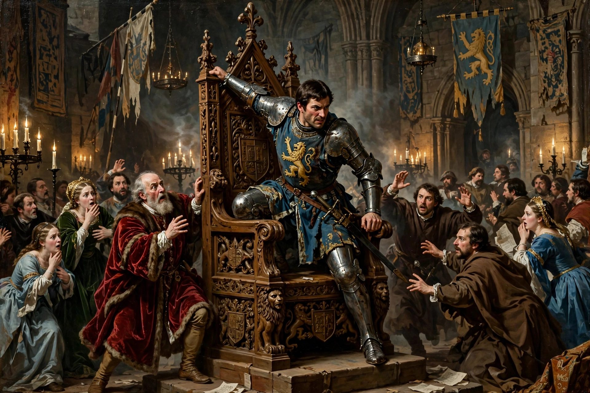

| Usurper | |
|---|---|
 | |
| Definition | One who wrongfully seizes power or a throne |
| From Latin | usurpare — to seize for use, appropriate |
| Related | Coup d'état, pretender, regicide |
A usurper is an illegitimate or controversial claimant to power, often but not exclusively a monarch, who seizes authority by force or intrigue rather than by lawful succession. The label is inherently retrospective: a successful usurper who founds a lasting dynasty tends to be remembered as a legitimate ruler, while a failed one remains a usurper or rebel in the historical record.
Roman history is crowded with usurpers — provincial generals proclaimed emperor by their legions, especially during the Crisis of the Third Century, when dozens of claimants contested the throne. Byzantine politics likewise saw emperors deposed, blinded, or tonsured by rivals. In English history, Richard III has traditionally been portrayed as a usurper of the throne from his nephews, the Princes in the Tower, while Henry VII's victory at Bosworth in 1485 was retrospectively legitimated by Parliament despite its origin in conquest. Shakespearean drama returned obsessively to usurpation — in Richard III, Macbeth, Hamlet, and The Tempest.
Because usurpation violates the existing order, usurpers characteristically seek rapid legitimation: coronation, marriage into the displaced line, endorsement by religious authorities, fabricated genealogies, and the elimination or disgrace of rivals — sometimes extending to regicide. In modern usage the term is applied by analogy to leaders who seize power unconstitutionally, typically through a coup d'état.